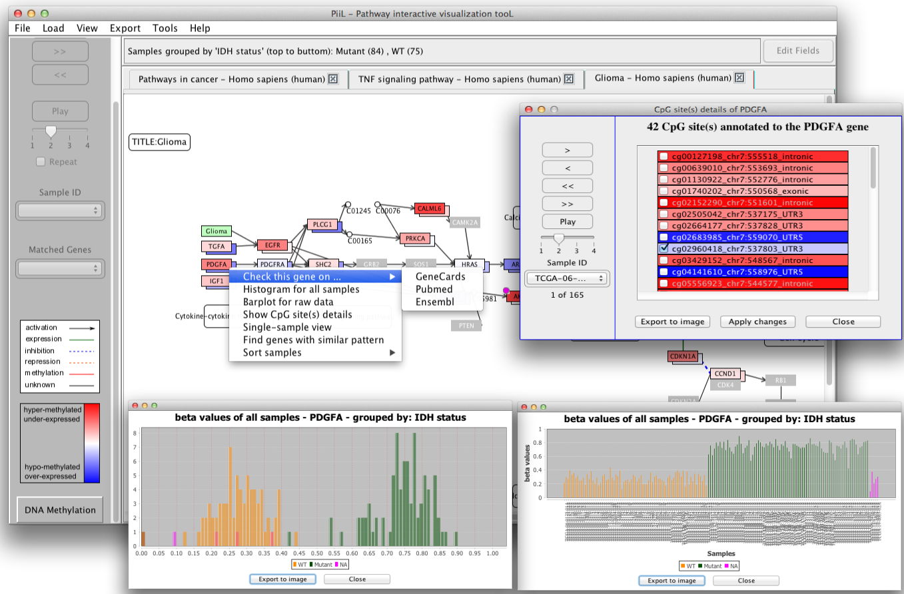

Welcome to PiiL!
PiiL is an open-source (the source code is available here) and
biologist-friendly tool. You can easily PiiL your data; i.e.
load your DNA methylation and/or gene expression data over any of
the KEGG pathways and let PiiL color it for you, in order to
identify or discover genes with differential methylation /
expression patterns. DNA methylation data can be from Illumina's
methylation arrays or RRBS. PiiL provides a set of analytical
features facilitating quick assessment of specific patterns, and
selecting subsets of CpG sites and examine thier impact on
expression of the host gene. PiiL also produces vector quality
images of the pathways and their visualized loaded data or a list of
genes highlighted in the pathway that are suitable to be used in
publications.
PiiL your data and cite us, please.
